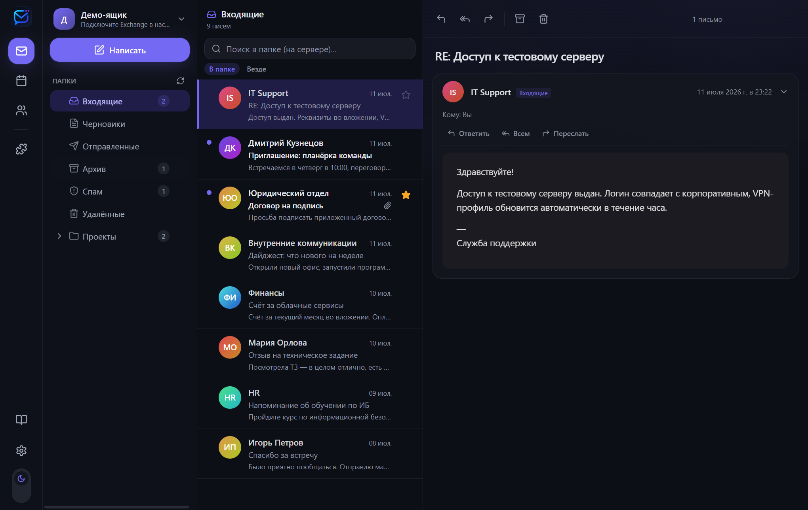

Больше, чем почта.
Вся работа вокруг письма.
OutTalk превращает письмо в задачу и сам собирает к ней остальное: ответы по той же переписке, встречи, людей, обращения Jira. Открываете задачу — и видите картину целиком. А ещё это быстрый и мощный почтовый клиент, одинаковый на Mac, Windows и Linux: Exchange, Gmail, Яндекс и любая почта по IMAP.
OutTalk находится в стадии бета-тестирования. Возможны ошибки; интерфейс и функции дорабатываются. Перед использованием ознакомьтесь с известными ограничениями версии и рекомендациями по сохранности данных.

Установка из терминала
Одна команда — и OutTalk готов к установке
Выберите систему, скопируйте команду и подтвердите штатную установку. Команда скачает актуальную версию с официального сайта.
Windows 10 и 11
PowerShell скачает установщик, сверит файл и запустит его.
irm https://outtalk.ru/install.ps1 | iex
Сборка для Windows сейчас недоступна.
Команда не отключает SmartScreen и другие средства защиты Windows.
macOS на Apple Silicon
Команда скачает образ и откроет его штатными средствами macOS.
curl -fsSL https://outtalk.ru/install.sh | sh
Сборка для macOS сейчас недоступна.
macOS может попросить отдельно подтвердить открытие неподписанного приложения.
Linux x64
Скачивает пакет и передаёт его штатной команде apt.
curl -fsSL https://outtalk.ru/install.sh | sh
Сохраняет AppImage в папку «Applications» и запускает его.
curl -fsSL https://outtalk.ru/install.sh | sh -s -- --appimage
Сборка для Linux сейчас недоступна.
Скрипт не запускает OutTalk с отключённой песочницей. Для установки .deb система запросит права администратора.